안개 초원에서 칼을 든 아기고양이 기사가 90° 카메라 롤과 함께 거대한 붉은 용과 마주쳐 도망치고 숨지만, 결국 용이 고양이를 머리에 태우고 안장 얹은 채 안개 하늘로 날아가는 26초 판타지.
| 화면 비율/해상도 | 9:16 · 1080x1920 · 30fps |
|---|---|
| 화면 방향 트릭 | 핵심 트릭. 샷1(0~4.60초)만 세로 9:16 원본. 3.93~4.57초에 카메라가 시계방향 약 85° 롤하고, 4.60초부터 끝까지(샷2~4, 21.4초 = 영상의 82%)는 16:9 가로 생성 영상을 시계방향 90° 회전(ffmpeg transpose=1)해 9:16을 꽉 채움 → 지면이 왼쪽, 하늘이 오른쪽. 폰을 반시계로 눕히면 풀해상도 가로 시네마가 됨. 거대한 날개폭의 용을 가로 구도로 담으면서 세로 릴 규격을 지키고, 롤이 '세상이 기울었다'는 연출로 방향 전환을 정당화함. |
| 워터마크 | 확인된 워터마크 없음(모든 그리드 프레임 네 모서리 확인). 원본 소스 24fps → 30fps 변환 흔적(5프레임마다 1프레임 중복)만 있음. |
| 화면 문구/자막 | 없음 (자막·문구·로고 없음). 캡션: '🐱⚔🐉 pt.2 / Comment "guide" for the prompts' |
| 원본 캡션 | 🐱⚔🐉 pt.2 Comment "guide" for the prompts |
첫 프레임부터 '작고 귀여운 것 × 극사실 판타지'의 대비: 분홍 리본 단 아기고양이가 진짜 같은 은빛 판금갑옷과 장검으로 안개 낀 전장에 비장하게 서 있음. 바람에 망토가 휙 넘어가는 0.5초 움직임이 스크롤을 멈추게 함. 'pt.2' 캡션이 시리즈 궁금증 유발.
| Setup 0.00-3.93s | 갑옷 아기고양이 기사가 안개 초원에서 결연히 대기. |
|---|---|
| Inciting 3.93-5.55s | 세상이 90° 기울며 거대한 붉은 용과 대치. |
| Escalation 5.55-12.27s | 포효·돌진·도주·은신, 용의 코가 바위 바로 뒤까지 — 긴장 최고조. |
| Climax 12.27-16.30s | 반전: 용이 공격 대신 고양이를 머리에 태우고 이륙. |
| Payoff 16.30-26.00s | 안장 얹은 용의 기수가 된 고양이, 날개 펼치고 안개 하늘로 비상. |
| Loop 22.60-26.00s | 흰 안개로 사라지는 엔딩 → 첫 장면의 회색 안개로 자연스럽게 이어지고, pt.3 기대. |
캡션 'Comment "guide" for the prompts' — 댓글 키워드 자동 DM(ManyChat류) 방식으로 댓글 수를 폭증시켜 알고리즘 신호 강화. pt.2 표기로 'pt.3 언제?' 댓글도 유도.
엄밀한 루프(첫/끝 프레임 일치)는 아님. 다만 마지막이 거의 흰 안개 화면 + 음악이 페이드 없이 뚝 끊기고, 첫 프레임이 회색 안개 하늘이라 반복 재생 시 이음새가 부드러움.
| Dutch roll / Barrel roll | 카메라 축 회전(더치 롤) @ 3.93-4.57s |
|---|---|
| Rotated landscape (90° CW transpose) | 가로 영상 90° 회전해 세로 채우기 @ 4.60-26.00s |
| Hard cut | 즉시 컷 전환 @ 4.60s, 12.27s, 17.37s |
| Scale reveal | 크기 대비로 괴물 공개 @ 4.60s |
| Camera shake / Crash knock | 충돌 흔들림 @ 6.30-6.80s |
| Ground-level tracking | 지면 높이 추적 촬영 @ 6.80-7.70s |
| Arc shot | 피사체 주위를 도는 촬영 @ 10.00-11.00s |
| Cut on action | 움직임 중 컷 @ 17.37s |
| Continuity jump | 연속성 점프(안장 갑자기 등장) @ 17.37s |
| Flyover + tilt-up | 머리 위 비행 + 틸트업 @ 21.45-22.60s |
| Frame stutter (source) | 중복 프레임 미세 끊김 @ 21.87-22.57s |
| In-camera white-out | 안개로 하얗게 사라지는 엔딩 @ 22.60-26.00s |
| 3:2-style pulldown (24→30 fps) | 24fps를 30fps로 변환(5프레임마다 중복) @ 전체 |
[character_sheet_en] a tiny fluffy long-haired kitten about 10 weeks old (Persian x British longhair look), cream fur with soft pale-apricot tabby markings on the forehead and cheeks, white muzzle and chin, big round glossy dark blue-grey eyes, small pink nose, small rounded ears, a small pale-pink satin bow clipped on top of the head near its LEFT ear, standing upright on its hind legs like a person, wearing a miniature but fully realistic suit of polished silver medieval plate armor (rounded pauldrons etched with fleur-de-lis ornaments, articulated gauntlets, breastplate, chainmail skirt, knee cops, greaves, pointed sabatons), dark-brown leather cross-belts with small brass buckles across chest and hips, a long ivory-cream heavy linen cape tied at the shoulders, holding a steel longsword with a brass crossguard. Tiny real-kitten scale (about 25 cm tall standing), fluffy tail visible behind the right leg, sword blade about as long as the kitten is tall. [wardrobe_props_en] Polished silver steel plate armor with soft satin sheen and fine scratches, fleur-de-lis etched pauldrons, chainmail skirt, dark-brown leather cross-belts with brass buckles, long ivory-cream heavy linen cape (dirt-free), steel longsword with brass crossguard and leather grip, pale-pink satin bow near the left ear. Dragon (shot 4 only): dark-brown leather saddle with high rounded cantle, black leather bridle with steel rings, long loose reins. [environment_en] a misty highland moor of long wet green grass, dense grey-white fog swallowing the horizon, a waist-high (to a human: knee-high) black granite boulder covered in green moss and white lichen dots, overcast diffused daylight, no sun, no people, no buildings. Wet grass with dew, occasional dirt clods, fog density high (visibility ~40 m), dragon partly veiled by fog when farther than 10 m. [lighting_en] Overcast, fully diffused soft daylight from above, no sun direction, no hard shadows, gentle wrap light on fur, soft specular highlights on armor, backlit bright white fog at the end. [color_grade_en] Low-contrast natural grade, lifted blacks, desaturated moss greens (sat ~55%), cool neutral grey fog (#C9CDD2 to #E8EAEC), crimson dragon (#8E1E24 / #B8323A) as the only saturated accent, cream cape (#E9E1CC), silver armor neutral; ending brightens to near white (#F2F2F4). [camera_lens_en] ARRI-style digital cinema look; 35mm for the vertical kitten intro at kitten eye level (25 cm); 24-28mm wide lenses at ground level (10-30 cm) for all dragon shots; handheld realism with micro shake, violent shake on impacts, one tilt-up flyover; shallow-to-medium depth of field. [realism_style_en] photorealistic live-action fantasy film still, ultra-detailed fur, scale and metal textures, soft flat overcast light, low contrast, muted desaturated greens, cool grey fog, crimson dragon as the only saturated color, subtle film grain, shot on ARRI Alexa 35. Live-action creature-feature realism (big-budget fantasy series look), physically plausible weight, debris and fog interaction. [negative_prompt_en] cartoon, 3d render look, plastic fur, anime, text, subtitles, watermark, logo, extra limbs, extra tails, two swords, deformed paws, human hands, missing armor, changing armor color, bow moving to the other ear, dragon with only two legs (wyvern), fire breathing, blue sky, sunshine, harsh shadows, oversaturated, lens flare, black borders, split screen, morphing, flicker
프레임 위 노란 3분할 선은 오른쪽 아래 버튼으로 켜고 끌 수 있어요. 각 프롬프트는 [복사] 버튼으로 바로 복사.
| 카메라 움직임 | 0~3.9초 거의 고정(미세 흔들림) → 3.93~4.57초 시계방향 배럴롤 약 85°(20프레임, 가속). 롤 중 줌 변화 없음(롤은 생성 클립에 포함된 것으로 추정; 24→30fps 풀다운 위상이 롤 구간까지 연속). |
|---|---|
| 화면 구성(구도) | 고양이 중심 x 53%, 발끝 y 77%, 머리 꼭대기 y 36%(몸 높이 약 41%), 칼끝 y 17%(헤드룸 17%). 지평선(안개 경계) y 42%. 세로 3분할 중앙열, 가로 3분할 하단선에 허리. 위 42%는 평평한 회색 안개 하늘, 아래 58%는 바람에 눕는 긴 풀. 망토는 좌우로 x 15~95%까지 펄럭임. |
| 동물 행동/연기 | 갑옷 입은 새끼 고양이가 두 앞발로 장검을 얼굴 앞에 수직으로 세워 들고 비장하게 서 있음. 큰 눈, 분홍 리본. 망토가 강풍에 휘날림. |
| 배경 | 안개 낀 고원 초원(무어), 지평선이 안개에 녹아 사라짐, 먼 오른쪽에 흐릿한 바위 몇 개. |
| 화면 문구/자막 | 없음 |
| 다음 컷 전환 | Camera roll (in-shot 90° dutch roll) + Hard cut — 3.93~4.57초(20프레임) 시계방향 롤로 화면이 옆으로 눕고, 4.60초(프레임 138)에서 이미 90° 회전된 샷2로 하드컷. 디졸브 없음(픽셀차 33.6 단일 스파이크). |
| BGM 상태 | 인트로: 음악이 거의 없는 저역 앰비언트(바람+저역 드론). 0.25초 부드러운 서브 붐, 1.75~2.0초 저역 스웰, 2.2~3.5초 가장 조용함(-28~-32dB) → 3.5초부터 라이저로 부풀어 4.2초 피크(추정). |
Vertical 9:16 photorealistic cinematic still. a tiny fluffy long-haired kitten about 10 weeks old (Persian x British longhair look), cream fur with soft pale-apricot tabby markings on the forehead and cheeks, white muzzle and chin, big round glossy dark blue-grey eyes, small pink nose, small rounded ears, a small pale-pink satin bow clipped on top of the head near its LEFT ear, standing upright on its hind legs like a person, wearing a miniature but fully realistic suit of polished silver medieval plate armor (rounded pauldrons etched with fleur-de-lis ornaments, articulated gauntlets, breastplate, chainmail skirt, knee cops, greaves, pointed sabatons), dark-brown leather cross-belts with small brass buckles across chest and hips, a long ivory-cream heavy linen cape tied at the shoulders, holding a steel longsword with a brass crossguard, holding the longsword upright in front of its face with both front paws, blade pointing straight up, standing heroically and facing the camera in the exact center of the frame: kitten centered at x 53%, feet at y 77%, top of head at y 36%, sword tip at y 17%, the cape blown out to the right side by strong wind. a misty highland moor of long wet green grass, dense grey-white fog swallowing the horizon, a waist-high (to a human: knee-high) black granite boulder covered in green moss and white lichen dots, overcast diffused daylight, no sun, no people, no buildings. Horizon line dissolved in fog at y 42%, upper 42% of the frame is flat pale-grey fog, lower 58% is long green grass bending in the wind, tiny rocks faint in the far right fog. Camera at the kitten's eye level about 25 cm above the ground, 35mm lens, f/2.8, kitten tack-sharp, background soft. photorealistic live-action fantasy film still, ultra-detailed fur, scale and metal textures, soft flat overcast light, low contrast, muted desaturated greens, cool grey fog, crimson dragon as the only saturated color, subtle film grain, shot on ARRI Alexa 35.
Same scene rotated 85 degrees clockwise: the grass fills the left and bottom-left of the frame, fog on the right, the armored kitten appears lying sideways (upright relative to the tilted ground) at frame center, strong rotational motion blur, 9:16.
The armored kitten keeps its heroic stance holding the sword vertical, breathing, tiny head tilt, one slow blink. Strong gusty wind: at 0.5 s the cape whips from the right side to the left side and keeps flapping, the long grass waves in gusts that grow stronger from 2 s, a band of fog drifts slowly across the horizon. Camera: static with very subtle handheld micro-drift for the first 3.9 seconds, then from 3.9 s to 4.6 s the camera performs a smooth, accelerating CLOCKWISE barrel roll of about 90 degrees around the lens axis, with rotational motion blur, ending with the ground along the LEFT edge of the frame and the sky on the right. The kitten does not move with the roll (it stays upright relative to the ground). Keep the kitten's face, pink bow on the left ear, silver armor, ivory cape and sword identical the whole time; no morphing, no zoom, no cut.
cartoon, 3d render look, plastic fur, anime, text, subtitles, watermark, logo, extra limbs, extra tails, two swords, deformed paws, human hands, missing armor, changing armor color, bow moving to the other ear, dragon with only two legs (wyvern), fire breathing, blue sky, sunshine, harsh shadows, oversaturated, lens flare, black borders, split screen, morphing, flicker, camera cut, zoom in, kitten walking, sword swing
9:16 세로, 1080x1920(최소 720x1280), 5초, image2video(시작 프레임=nano-banana-pro 이미지). 롤이 흔들리면 first-last frame 모드(끝 프레임=85° 회전 버전)를 쓰거나 롤 없이 뽑고 편집에서 롤. 사용 구간 0.00~4.60초(138프레임). 시드 고정 후 바람 강도만 바꿔 2~3개 뽑아 최선 선택.
roll in edit: scale=2160:3840,rotate=a='1.48*pow(min((n+1)/20,1),2)':ow=2160:oh=3840,zoompan=z='1.02*(cos(th)+1.778*sin(th))':d=1:s=1080x1920,tmix=frames=3 (th=1.48*pow(min((on+1)/20,1),2)); then concat hard cut to transpose=1 clip
s01 clip wrapper: GSAP timeline at 3.93s: to(wrapper,{rotation:85, scale:1.86, duration:0.67, ease:'power2.in'}) with CSS filter blur(0→2px) as motion-blur proxy; s02 clip starts at 4.60 with data-start=4.6, no transition element (hard cut).Vertical 9:16 photorealistic cinematic still. a tiny baby golden (Syrian) hamster standing upright on its hind legs, plump round body, golden-orange fur on the back and head with a cream-white belly, chin and muzzle, full soft cheeks, big round glossy black eyes, small rounded pink-edged ears, pink nose and whiskers, tiny pink paws, a small pale-pink satin bow clipped on top of the head near its LEFT ear, wearing a miniature but fully realistic suit of polished silver medieval plate armor (rounded pauldrons etched with fleur-de-lis, articulated gauntlets, breastplate, chainmail skirt, greaves, pointed sabatons), dark-brown leather cross-belts with brass buckles, a long ivory-cream linen cape, holding a steel longsword with a brass crossguard, holding the longsword upright in front of its face with both tiny paws, standing heroically facing the camera in the exact center: hamster centered at x 53%, feet at y 77%, top of head at y 40%, sword tip at y 17%, cape blown to the right. a misty highland moor of long wet green grass, dense grey-white fog swallowing the horizon, a waist-high (to a human: knee-high) black granite boulder covered in green moss and white lichen dots, overcast diffused daylight, no sun, no people, no buildings. Horizon in fog at y 42%, long green grass bending in wind. Camera at hamster eye level 15 cm above the ground, 35mm lens, f/2.8. photorealistic live-action fantasy film still, ultra-detailed fur, scale and metal textures, soft flat overcast light, low contrast, muted desaturated greens, cool grey fog, crimson dragon as the only saturated color, subtle film grain, shot on ARRI Alexa 35.
The armored golden hamster keeps its heroic stance, whiskers twitching, cheeks puffing slightly, one blink; gusty wind whips the cape from right to left at 0.5 s, grass waves stronger from 2 s, fog drifts. Camera static for 3.9 s, then a smooth accelerating clockwise barrel roll of 90 degrees from 3.9 s to 4.6 s with rotational motion blur, ending with the ground on the left edge. Hamster identity, bow on the left ear, armor and sword unchanged.
햄스터는 꼬리가 거의 없으니 '꼬리' 묘사 삭제. 볼주머니·수염 떨림이 귀여움 포인트. 체구가 더 작아 칼이 상대적으로 커 보이게(몸 높이 약 37%).
| beats_ko |
|
|---|
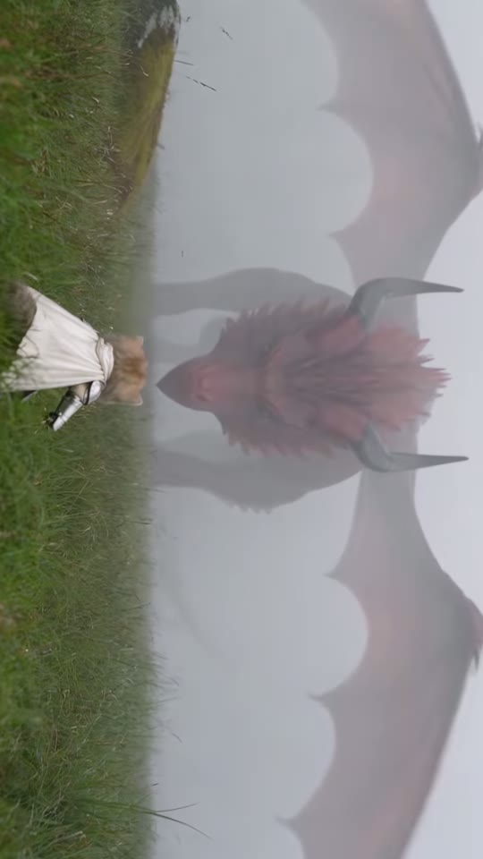
g_04.75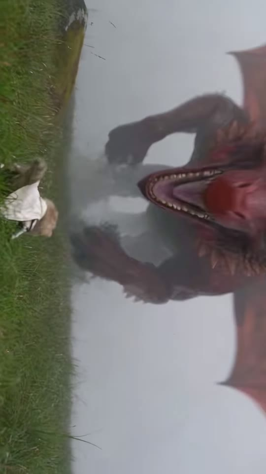
g_05.75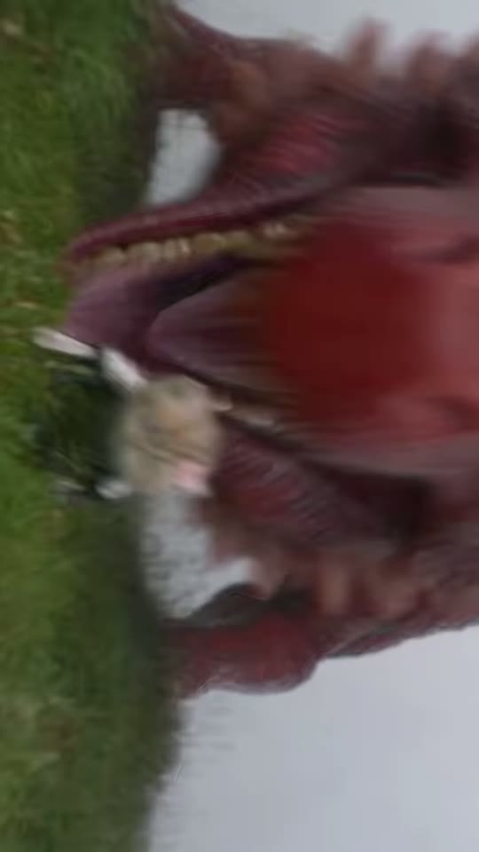
g_06.25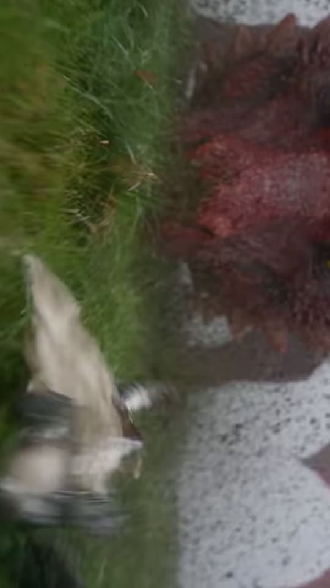
g_07.25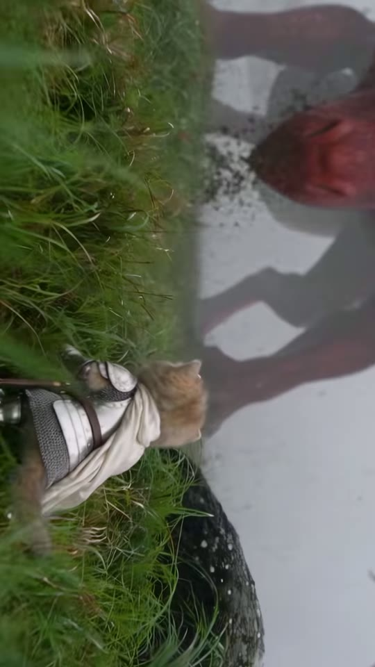
g_08.25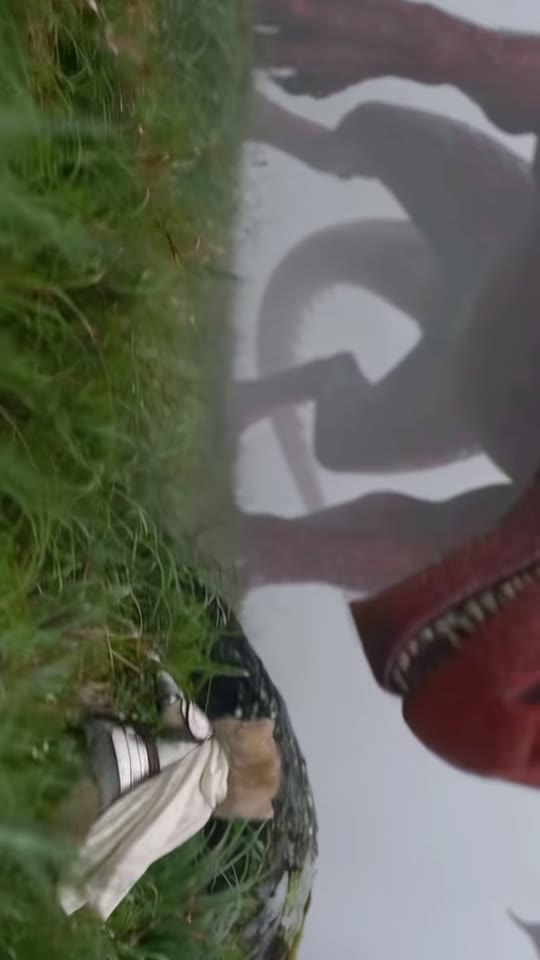
g_09.75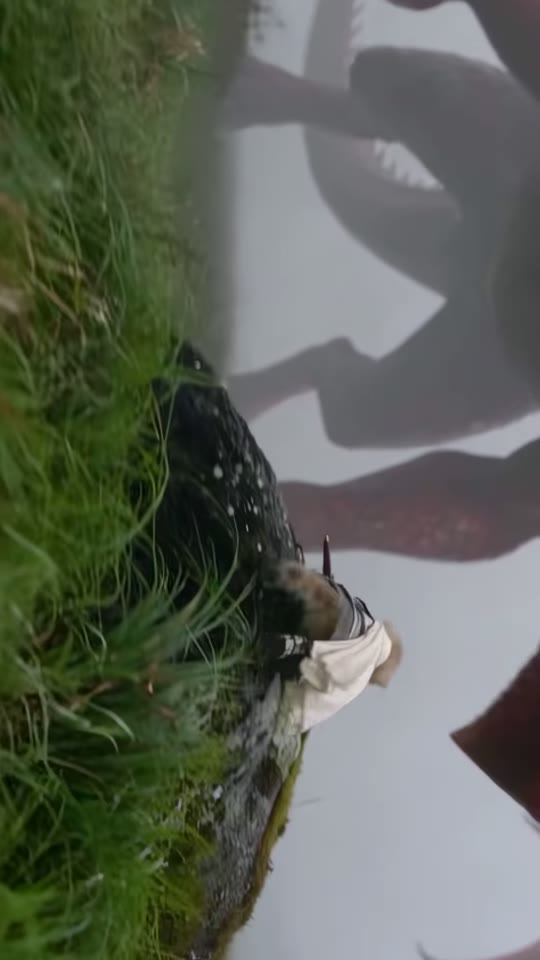
g_10.75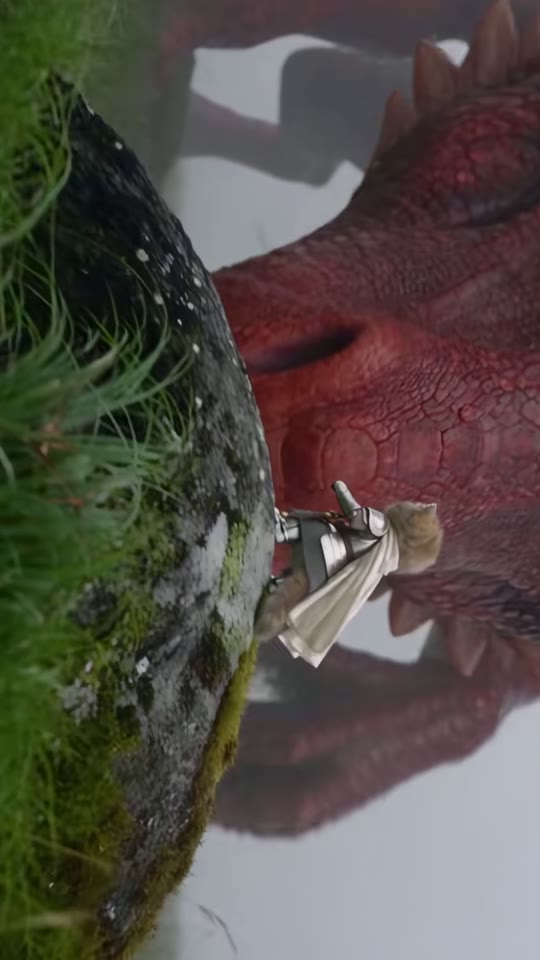
g_11.75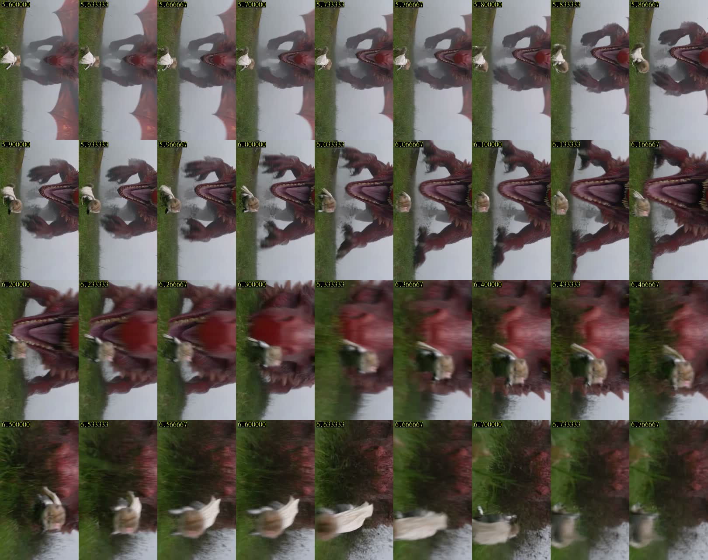
x_5.60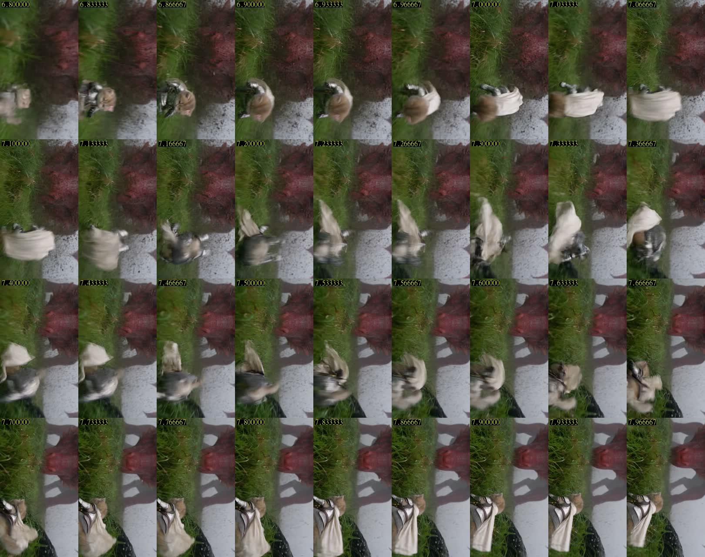
x_6.80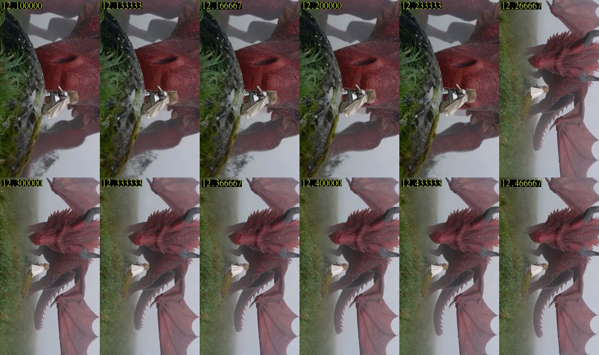
x_12.10| 카메라 움직임 | 느린 푸시인(4.60~5.55) → 충돌 셰이크+낙하(6.30~6.80) → 지면 레벨 사이드 트래킹(6.80~7.70) → 거의 정지+미세 핸드헬드(7.70~10.0) → 왼쪽으로 느린 아크(10.0~11.0) → 정지(11.0~12.27). 한 테이크(24→30 풀다운 위상 4.77~12.10 연속 = 원본 생성 클립 1개로 추정). |
|---|---|
| 화면 구성(구도) | [회전 후 9:16 기준] 시작: 풀 띠 x 0~32%(=지면), 고양이 x 2~30% · y 33~50%, 용 머리 x 33~50% · y 42~50%, 날개가 y 0~100% 전체. 바위 x 25~35% · y 0~20%. 숨는 구간: 풀 x 0~55%, 고양이 x 5~55% · y 55~85%, 바위 x 30~60% 하단, 용 다리/주둥이 x 55~100%. [생성용 16:9 원본 기준] 시작: 지평선 y 68%, 고양이 뒷모습 x 40% · y 70~98%(프레임 높이 28%), 용 머리 x 45% · y 45~67%, 날개 끝 y 5%로 프레임 가로 전체, 바위 좌측 x 0~20% · y 62~75%. |
| 동물 행동/연기 | 대치 → 용의 포효·돌진 → 고양이 도주·구르기 → 바위 뒤 은신 → 용이 냄새 맡으며 수색. |
| 배경 | 안개 무어, 이끼·흰 지의류 점박이 검은 화강암 바위, 흙덩이/풀 조각 파편, 용의 몸은 안개에 반쯤 가려져 대기원근감. |
| 화면 문구/자막 | 없음 |
| 다음 컷 전환 | Hard cut (action tension cut) — 12.267초(프레임 368)에서 하드컷. 클로즈업(주둥이 옆 고양이) → 와이드(바위 위 고양이와 머리 숙인 용)로 스케일 점프. 픽셀차 43.5 단일 스파이크, 디졸브 없음. |
| BGM 상태 | 4.6~5.5 저역 긴장 드론(음악 거의 없음) → 5.55 포효 순간 고역 급상승 → 6.5초부터 음악 본격 진입: 110BPM, 매 마디(약 2.2초) 첫 박에 큰 타악 히트(6.51, 8.67, 10.88) + 현악 오스티나토(추정). |
Horizontal 16:9 photorealistic cinematic still (to be rotated 90 degrees clockwise in the edit). Low ground-level camera 20 cm above the grass, 28mm lens. Foreground bottom-center: a tiny fluffy long-haired kitten about 10 weeks old (Persian x British longhair look), cream fur with soft pale-apricot tabby markings on the forehead and cheeks, white muzzle and chin, big round glossy dark blue-grey eyes, small pink nose, small rounded ears, a small pale-pink satin bow clipped on top of the head near its LEFT ear, standing upright on its hind legs like a person, wearing a miniature but fully realistic suit of polished silver medieval plate armor (rounded pauldrons etched with fleur-de-lis ornaments, articulated gauntlets, breastplate, chainmail skirt, knee cops, greaves, pointed sabatons), dark-brown leather cross-belts with small brass buckles across chest and hips, a long ivory-cream heavy linen cape tied at the shoulders, holding a steel longsword with a brass crossguard, seen from BEHIND, small (its height is 28% of the frame), standing at x 40% with its feet near the bottom edge, cape hanging down its back, sword held low at its side. Mid-ground, 15 meters away in the fog: a colossal crimson-red European dragon with four legs and two huge bat-like wings, deep blood-red pebbled scales, lighter coral-red belly plates, a crown-like frill of long red spines around the head and jaw, two thick curved charcoal-black horns sweeping backward, amber reptile eyes, yellowed fangs, translucent red wing membranes with dark finger bones and a hooked claw at each wing wrist, a long tail with a row of spikes; its head alone is about ten times bigger than the kitten, standing on all fours facing the camera and the kitten, head lowered like a bull at x 45%, y 45-67%, its two wings spread wide across the ENTIRE width of the frame with wing tips near the top edge, the whole dragon half-veiled by thick fog. a misty highland moor of long wet green grass, dense grey-white fog swallowing the horizon, a waist-high (to a human: knee-high) black granite boulder covered in green moss and white lichen dots, overcast diffused daylight, no sun, no people, no buildings, boulder at the far left edge (x 0-20%, y 62-75%). Horizon line (grass meets fog) at y 68%. photorealistic live-action fantasy film still, ultra-detailed fur, scale and metal textures, soft flat overcast light, low contrast, muted desaturated greens, cool grey fog, crimson dragon as the only saturated color, subtle film grain, shot on ARRI Alexa 35. IMPORTANT: generate as a normal horizontal 16:9 landscape shot with the ground at the BOTTOM; in the edit it is rotated 90 degrees clockwise (ffmpeg transpose=1) so the ground ends up on the LEFT edge of the 9:16 reel.
Horizontal 16:9: extreme low close shot beside the mossy black boulder; the armored kitten presses against the rock face at center-right, a gigantic crimson dragon snout with a large nostril and scaled lip fills the right half of the frame directly behind the rock, horns and spines blurred above, fog, 28mm.
Continuous single take, 10 seconds, ground-level camera. 0-0.9 s: tense standoff, slow push-in toward the kitten's back, fog drifting. 0.9-1.1 s: the dragon jerks its head back and opens its jaws wide. 1.1-1.5 s: it roars and lunges forward, front claws reaching, while the kitten spins around and sprints toward the camera. 1.5-1.7 s: the jaws snap shut just behind the kitten. 1.7-2.2 s: the camera is knocked down to grass level with violent shake and heavy motion blur. 2.2-2.8 s: the camera tracks sideways at grass level beside the running, tumbling kitten, clods of earth rain down, the dragon's red neck sweeps in the background. 2.8-3.1 s: the kitten dives behind the mossy black boulder. 3.1-5.0 s: the kitten presses its back against the rock clutching its sword and looks back; beyond the rock the dragon's huge legs stomp past in the fog, dirt sprays, the tail swings. 5.0-5.4 s: the dragon's toothed lower jaw sweeps past close to the lens. 5.4-6.4 s: the camera slowly arcs to the left around the boulder. 6.4-7.7 s: the dragon's enormous snout and nostril slide in right behind the rock, sniffing; the kitten freezes flat against the stone. Realistic weight, ground shake and debris physics. Keep kitten armor, bow, cape and the dragon's horns, spines and colors consistent; no fire, no cut. IMPORTANT: generate as a normal horizontal 16:9 landscape shot with the ground at the BOTTOM; in the edit it is rotated 90 degrees clockwise (ffmpeg transpose=1) so the ground ends up on the LEFT edge of the 9:16 reel.
cartoon, 3d render look, plastic fur, anime, text, subtitles, watermark, logo, extra limbs, extra tails, two swords, deformed paws, human hands, missing armor, changing armor color, bow moving to the other ear, dragon with only two legs (wyvern), fire breathing, blue sky, sunshine, harsh shadows, oversaturated, lens flare, black borders, split screen, morphing, flicker, kitten eaten, blood, gore, dragon biting the kitten, camera cut
16:9 가로 1920x1080, 10초, image2video. 사용 7.67초(230프레임). 한 번에 안 나오면 2개로 분할: 2a(대치→포효→도주, 0~2.8초) + 2b(바위 은신→주둥이, 시작 프레임=2a의 흔들린 마지막 프레임) → 6.30~6.80초 모션블러 구간에서 이어붙이면 원본처럼 이음새가 안 보임. 편집에서 transpose=1(시계방향 90°).
concat (no xfade); cut at frame 368
s03 clip data-start=12.267, previous clip ends at 12.267; no transition element.
Horizontal 16:9 photorealistic cinematic still (rotated 90 degrees clockwise in the edit). Ground-level camera 15 cm above the grass, 28mm. Foreground bottom-center: a tiny baby golden (Syrian) hamster standing upright on its hind legs, plump round body, golden-orange fur on the back and head with a cream-white belly, chin and muzzle, full soft cheeks, big round glossy black eyes, small rounded pink-edged ears, pink nose and whiskers, tiny pink paws, a small pale-pink satin bow clipped on top of the head near its LEFT ear, wearing a miniature but fully realistic suit of polished silver medieval plate armor (rounded pauldrons etched with fleur-de-lis, articulated gauntlets, breastplate, chainmail skirt, greaves, pointed sabatons), dark-brown leather cross-belts with brass buckles, a long ivory-cream linen cape, holding a steel longsword with a brass crossguard, seen from BEHIND, very small (height 25% of frame) at x 40%, cape down its back. In the fog 15 m away: a colossal crimson-red European dragon with four legs and two huge bat-like wings, deep blood-red pebbled scales, lighter coral-red belly plates, a crown-like frill of long red spines around the head and jaw, two thick curved charcoal-black horns sweeping backward, amber reptile eyes, yellowed fangs, translucent red wing membranes with dark finger bones and a hooked claw at each wing wrist, a long tail with a row of spikes; its head alone is about ten times bigger than the kitten, facing the hamster, head lowered at x 45%, wings spread across the whole frame width. a misty highland moor of long wet green grass, dense grey-white fog swallowing the horizon, a waist-high (to a human: knee-high) black granite boulder covered in green moss and white lichen dots, overcast diffused daylight, no sun, no people, no buildings. Horizon at y 68%. photorealistic live-action fantasy film still, ultra-detailed fur, scale and metal textures, soft flat overcast light, low contrast, muted desaturated greens, cool grey fog, crimson dragon as the only saturated color, subtle film grain, shot on ARRI Alexa 35. IMPORTANT: generate as a normal horizontal 16:9 landscape shot with the ground at the BOTTOM; in the edit it is rotated 90 degrees clockwise (ffmpeg transpose=1) so the ground ends up on the LEFT edge of the 9:16 reel.
Same 10 s continuous take: standoff with slow push-in; at 0.9 s the dragon rears and roars and lunges; the hamster spins and scurries toward the camera on all fours then back on two legs; jaws snap behind it at 1.6 s; camera knocked to grass level with motion blur; ground-level tracking of the tumbling hamster; it dives behind the mossy boulder at 2.9 s and presses against it, cheeks puffed, sword clutched; dragon legs stomp past, tail swings; jaw sweeps near the lens at 5.2 s; slow arc left; the giant snout sniffs right behind the rock while the hamster freezes. IMPORTANT: generate as a normal horizontal 16:9 landscape shot with the ground at the BOTTOM; in the edit it is rotated 90 degrees clockwise (ffmpeg transpose=1) so the ground ends up on the LEFT edge of the 9:16 reel.
햄스터는 도주 시 네 발로 달리게 하면 더 리얼(0.3초 후 다시 두 발). 볼주머니 부풀리는 '겁먹음' 연출을 은신 구간에 추가.
| beats_ko |
|
|---|
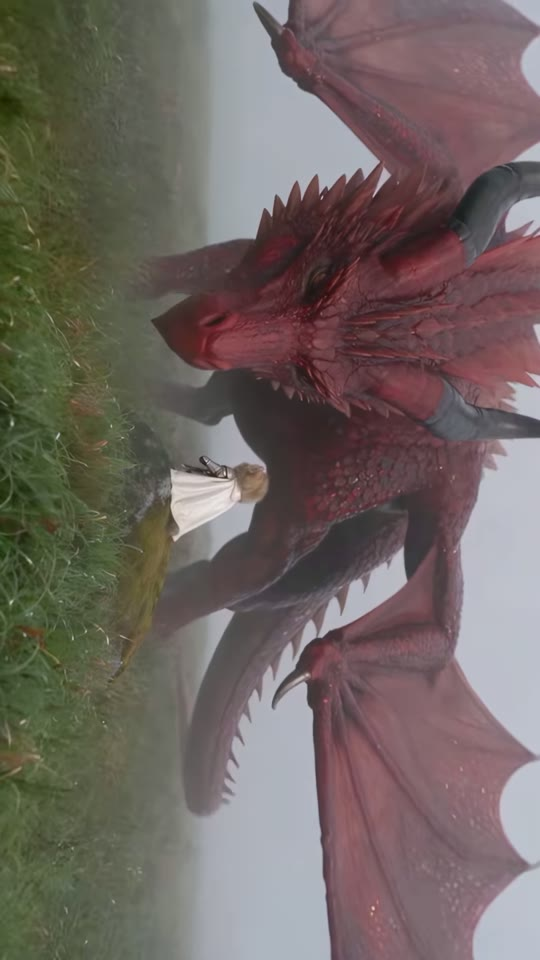
g_12.25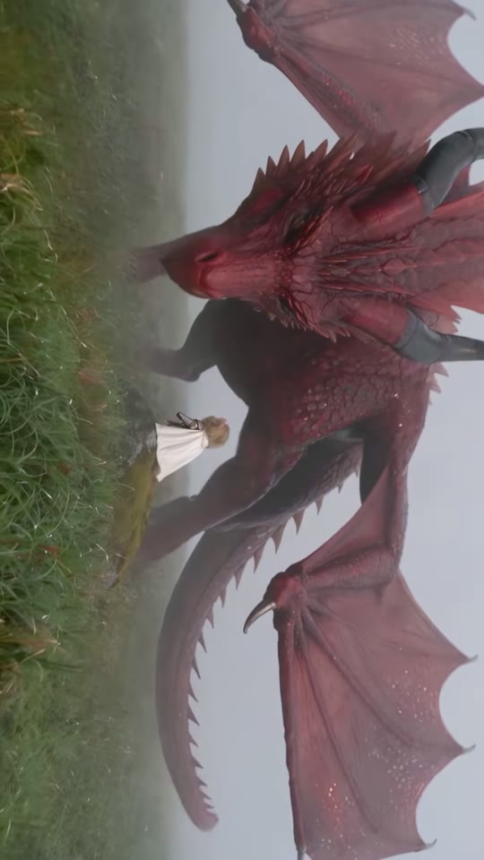
g_12.75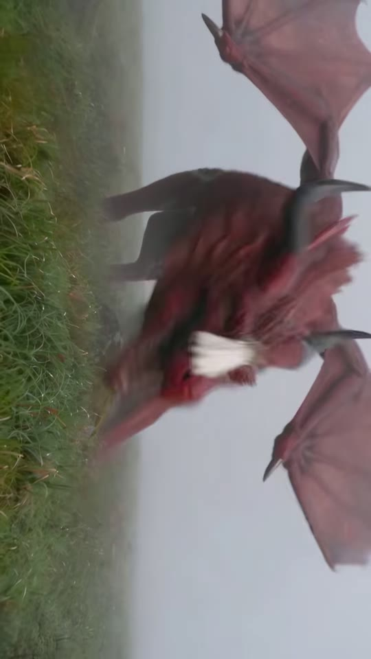
g_13.25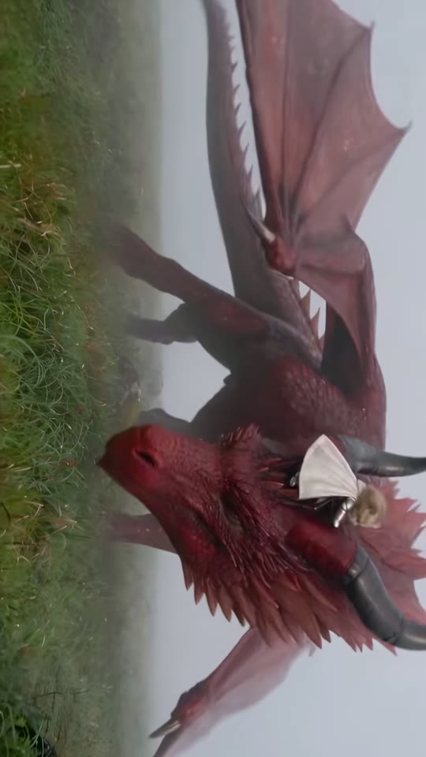
g_13.75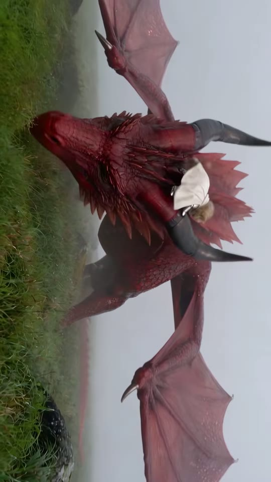
g_15.25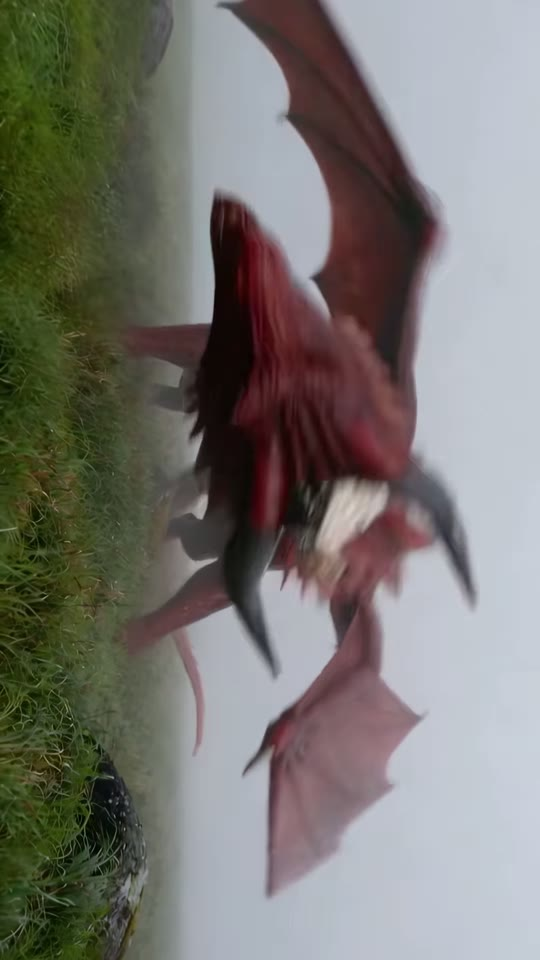
g_15.75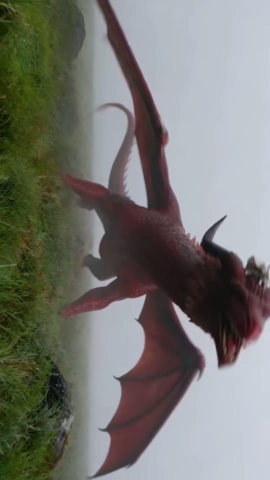
g_16.25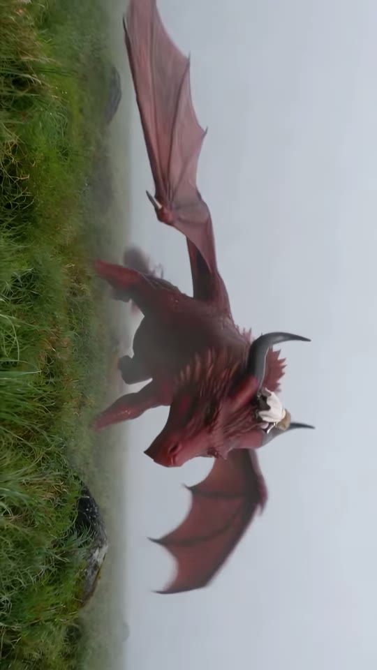
g_17.25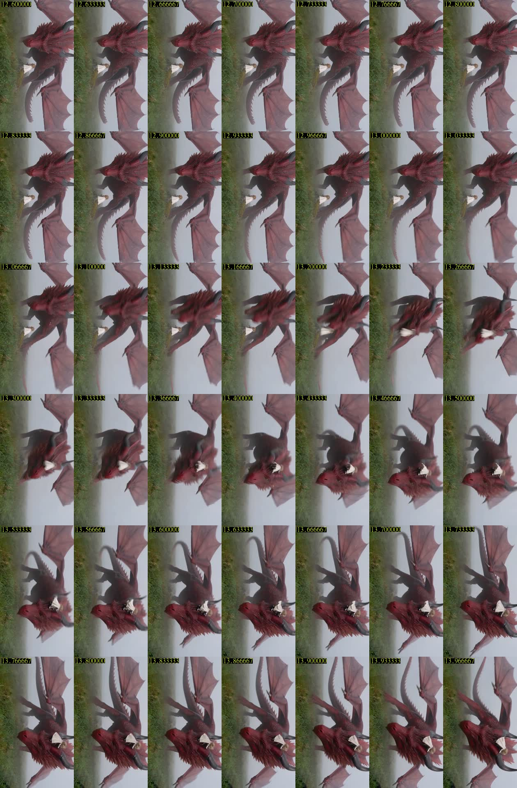
x_12.60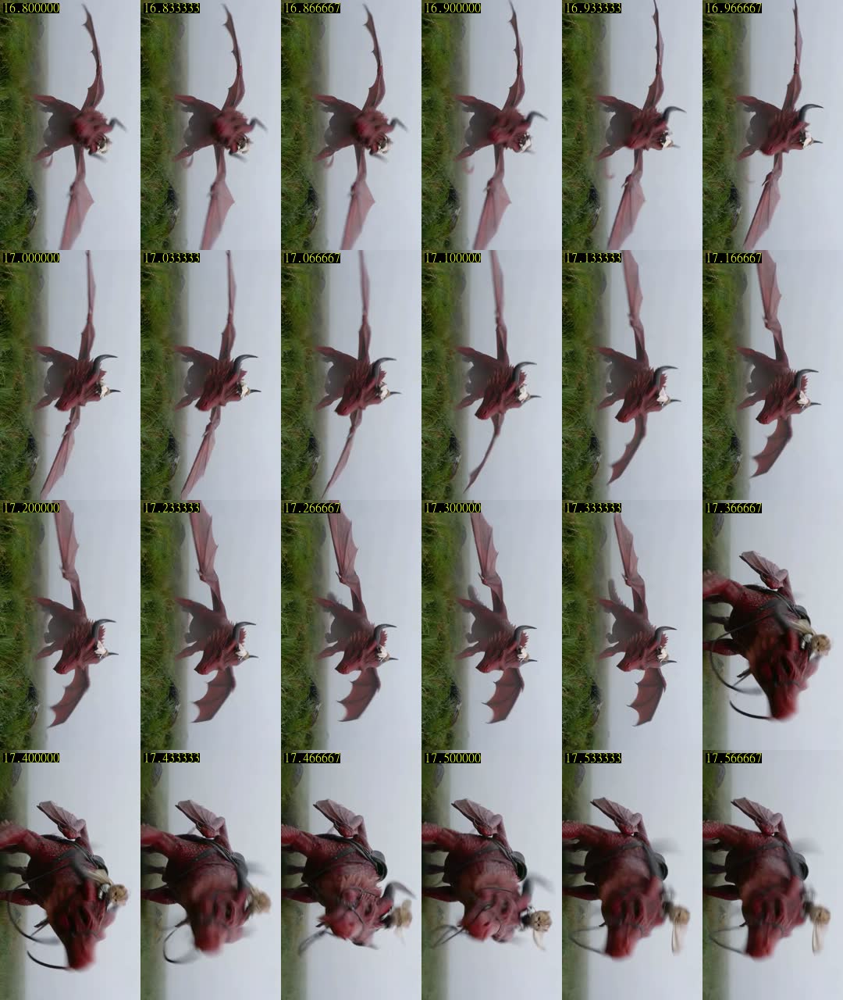
x_16.80| 카메라 움직임 | 고정에 가까움 + 미세 핸드헬드, 이륙 시 약간 틸트업(회전 화면에서는 오른쪽으로 팬처럼 보임). |
|---|---|
| 화면 구성(구도) | [9:16 회전 후] 풀 띠 x 0~38%. 12.27: 용 머리(주둥이 x 28% · y 33%) ~ 뿔(x 90%), 고양이 바위 위 x 32~45% · y 47~53%, 날개 y 0~20% / 62~100%. 13.75 이후: 용 얼굴 x 25~55% · y 55~85%, 고양이 x 70~85%. [16:9 원본] 지평선 y 62%, 용이 정면으로 웅크려 머리를 x 34% 쪽 땅까지 숙임, 고양이 바위 위 x 50% · y 55~68%(높이 13%), 양쪽 날개 반쯤 들어 좌우 끝까지, 꼬리 오른쪽 말림. 이후 용이 정면을 보며 머리 위(프레임 y 30%)에 고양이. |
| 동물 행동/연기 | 용이 공격 대신 고양이를 머리에 태우는 반전 → 이륙. |
| 배경 | 같은 안개 무어, 전경 왼쪽 하단에 바위 일부. |
| 화면 문구/자막 | 없음 |
| 다음 컷 전환 | Hard cut on action (cut on motion) — 17.367초(프레임 521): 공중에서 카메라로 다가오는 용 → 카메라 바로 앞에 착지하는 용(모션블러)로 하드컷. 움직임 방향이 이어져 튐이 가려짐. 이때 안장·고삐가 갑자기 생김(의도적/AI 연속성 점프). |
| BGM 상태 | 음악 풀 편성 유지. 마디 히트 13.09, 15.30(추정 타악). 13초대 영웅적 브라스 모티프 시작(추정). |
Horizontal 16:9 photorealistic cinematic wide shot (rotated 90 degrees clockwise in the edit). Low ground-level camera 30 cm high, 28mm. a colossal crimson-red European dragon with four legs and two huge bat-like wings, deep blood-red pebbled scales, lighter coral-red belly plates, a crown-like frill of long red spines around the head and jaw, two thick curved charcoal-black horns sweeping backward, amber reptile eyes, yellowed fangs, translucent red wing membranes with dark finger bones and a hooked claw at each wing wrist, a long tail with a row of spikes; its head alone is about ten times bigger than the kitten, crouching and facing the camera, its head lowered all the way to the grass at x 34% with the snout touching the ground, wings half-raised on both sides reaching the frame edges, tail curling on the right. On top of the mossy black boulder at frame center (x 50%, y 68-80%) stands a tiny fluffy long-haired kitten about 10 weeks old (Persian x British longhair look), cream fur with soft pale-apricot tabby markings on the forehead and cheeks, white muzzle and chin, big round glossy dark blue-grey eyes, small pink nose, small rounded ears, a small pale-pink satin bow clipped on top of the head near its LEFT ear, standing upright on its hind legs like a person, wearing a miniature but fully realistic suit of polished silver medieval plate armor (rounded pauldrons etched with fleur-de-lis ornaments, articulated gauntlets, breastplate, chainmail skirt, knee cops, greaves, pointed sabatons), dark-brown leather cross-belts with small brass buckles across chest and hips, a long ivory-cream heavy linen cape tied at the shoulders, holding a steel longsword with a brass crossguard, small (13% of frame height), bravely facing the dragon's snout an arm's length away. a misty highland moor of long wet green grass, dense grey-white fog swallowing the horizon, a waist-high (to a human: knee-high) black granite boulder covered in green moss and white lichen dots, overcast diffused daylight, no sun, no people, no buildings. Horizon at y 62%. photorealistic live-action fantasy film still, ultra-detailed fur, scale and metal textures, soft flat overcast light, low contrast, muted desaturated greens, cool grey fog, crimson dragon as the only saturated color, subtle film grain, shot on ARRI Alexa 35. IMPORTANT: generate as a normal horizontal 16:9 landscape shot with the ground at the BOTTOM; in the edit it is rotated 90 degrees clockwise (ffmpeg transpose=1) so the ground ends up on the LEFT edge of the 9:16 reel.
Horizontal 16:9: the crimson dragon airborne 5 m from the camera, facing it, wings mid-beat, kitten knight sitting between its horns, grass at bottom 38%, fog.
0-0.8 s: stillness, the dragon breathes over the kitten standing on the rock. 0.8-1.2 s: the dragon swings its head down and up in one quick scooping motion, flipping the kitten onto the top of its head where it lands sitting between the two black horns, holding on. 1.2-3.0 s: the dragon lifts its head proudly and turns its face toward the camera, the kitten's cape flutters. 3.0-3.3 s: the wings rise high. 3.3-4.0 s: the dragon rears up on its hind legs and beats its wings down, leaping off the ground. 4.0-5.0 s: airborne, hovering and gliding toward the camera with slow powerful wingbeats, the kitten still on its head. Camera mostly locked-off at ground level, slight tilt up during takeoff. Keep identities consistent; dragon has NO saddle in this shot; no fire. IMPORTANT: generate as a normal horizontal 16:9 landscape shot with the ground at the BOTTOM; in the edit it is rotated 90 degrees clockwise (ffmpeg transpose=1) so the ground ends up on the LEFT edge of the 9:16 reel.
cartoon, 3d render look, plastic fur, anime, text, subtitles, watermark, logo, extra limbs, extra tails, two swords, deformed paws, human hands, missing armor, changing armor color, bow moving to the other ear, dragon with only two legs (wyvern), fire breathing, blue sky, sunshine, harsh shadows, oversaturated, lens flare, black borders, split screen, morphing, flicker, saddle, reins, kitten falling, dragon eating kitten
16:9 1920x1080, 5초(원본 5.10초 사용 → 5초 생성이면 마지막 3프레임 복제 패딩, 스크립트 tpad 처리) 또는 10초 생성 후 5.10초 발췌. image2video 또는 ref2video(캐릭터시트 2장).
concat (no xfade); cut at frame 521
s04 clip data-start=17.367; hard cut.
Horizontal 16:9 photorealistic wide shot (rotated 90 degrees clockwise in the edit). Low camera 30 cm high, 28mm. a colossal crimson-red European dragon with four legs and two huge bat-like wings, deep blood-red pebbled scales, lighter coral-red belly plates, a crown-like frill of long red spines around the head and jaw, two thick curved charcoal-black horns sweeping backward, amber reptile eyes, yellowed fangs, translucent red wing membranes with dark finger bones and a hooked claw at each wing wrist, a long tail with a row of spikes; its head alone is about ten times bigger than the kitten, crouching facing the camera, head lowered to the grass at x 34%, wings half-raised. On the mossy boulder at center stands a tiny baby golden (Syrian) hamster standing upright on its hind legs, plump round body, golden-orange fur on the back and head with a cream-white belly, chin and muzzle, full soft cheeks, big round glossy black eyes, small rounded pink-edged ears, pink nose and whiskers, tiny pink paws, a small pale-pink satin bow clipped on top of the head near its LEFT ear, wearing a miniature but fully realistic suit of polished silver medieval plate armor (rounded pauldrons etched with fleur-de-lis, articulated gauntlets, breastplate, chainmail skirt, greaves, pointed sabatons), dark-brown leather cross-belts with brass buckles, a long ivory-cream linen cape, holding a steel longsword with a brass crossguard, tiny (11% of frame height), facing the dragon's snout. a misty highland moor of long wet green grass, dense grey-white fog swallowing the horizon, a waist-high (to a human: knee-high) black granite boulder covered in green moss and white lichen dots, overcast diffused daylight, no sun, no people, no buildings. Horizon at y 62%. photorealistic live-action fantasy film still, ultra-detailed fur, scale and metal textures, soft flat overcast light, low contrast, muted desaturated greens, cool grey fog, crimson dragon as the only saturated color, subtle film grain, shot on ARRI Alexa 35. IMPORTANT: generate as a normal horizontal 16:9 landscape shot with the ground at the BOTTOM; in the edit it is rotated 90 degrees clockwise (ffmpeg transpose=1) so the ground ends up on the LEFT edge of the 9:16 reel.
Stillness 0.8 s, then the dragon scoops the hamster onto the top of its head in one swing (0.8-1.2 s); the hamster lands sitting between the horns gripping a horn with its tiny paws; the dragon lifts its head and turns to the camera; wings rise at 3.0 s; it rears and leaps into the air at 3.3 s and hovers toward the camera until 5 s. No saddle. IMPORTANT: generate as a normal horizontal 16:9 landscape shot with the ground at the BOTTOM; in the edit it is rotated 90 degrees clockwise (ffmpeg transpose=1) so the ground ends up on the LEFT edge of the 9:16 reel.
햄스터가 뿔을 두 앞발로 꼭 잡는 디테일이 귀여움 포인트. 너무 작아 안 보이면 망토 색을 조금 밝게.
| beats_ko |
|
|---|
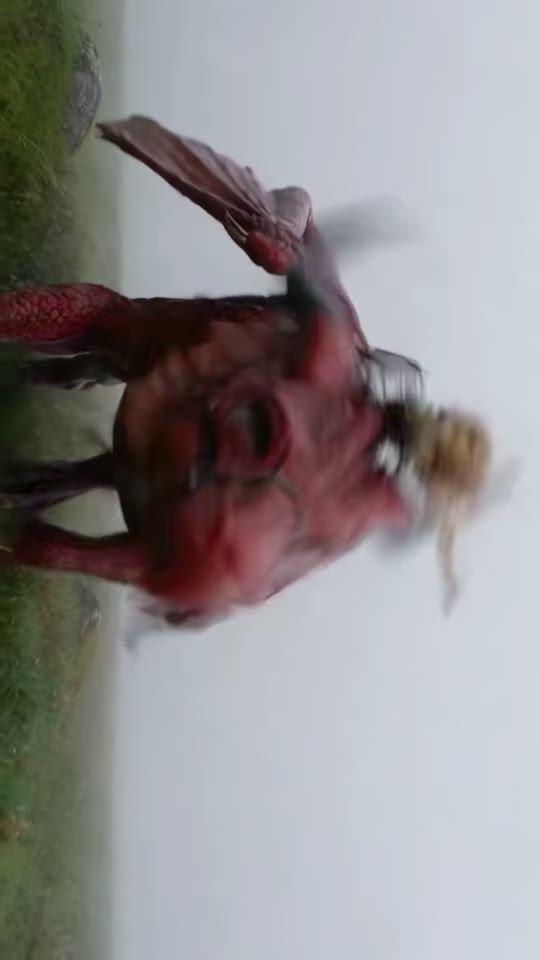
g_17.75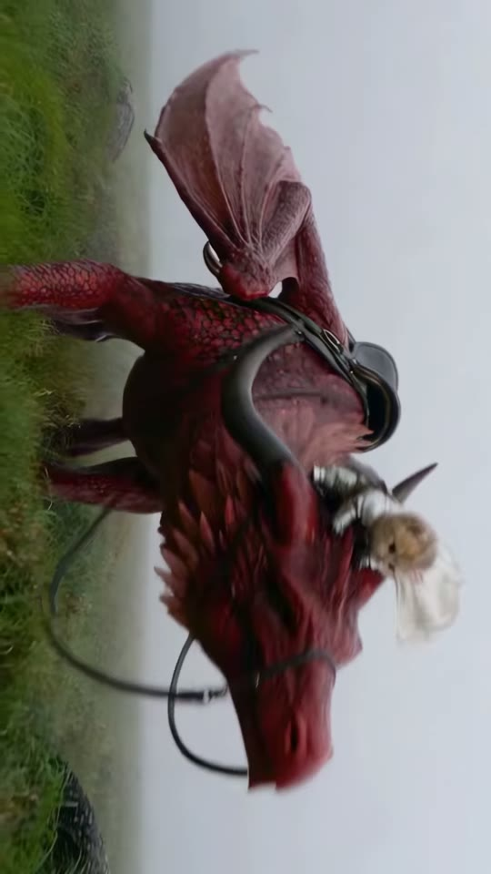
g_18.75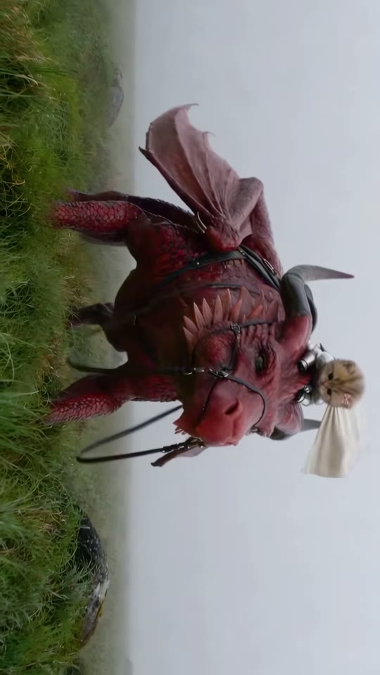
g_19.75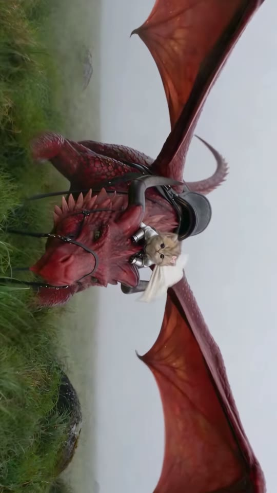
g_20.75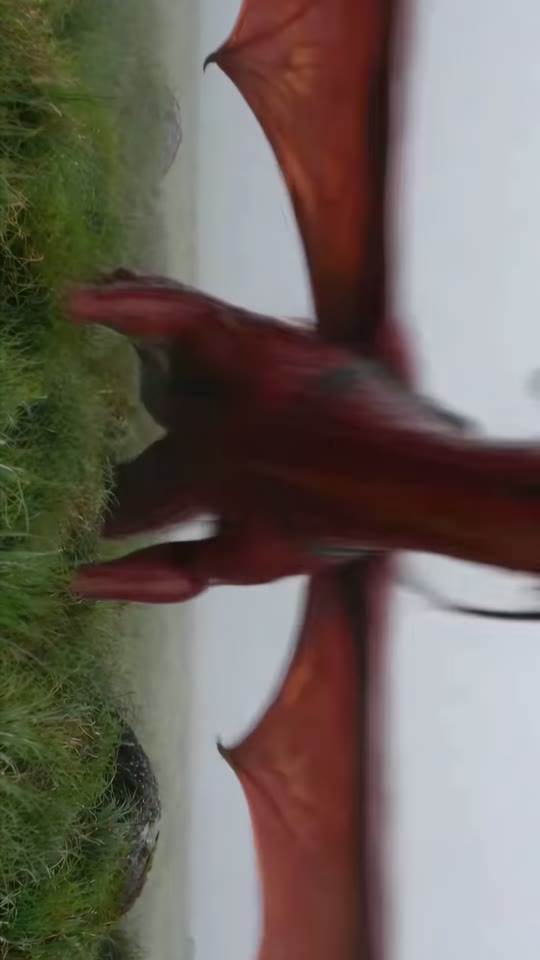
g_21.75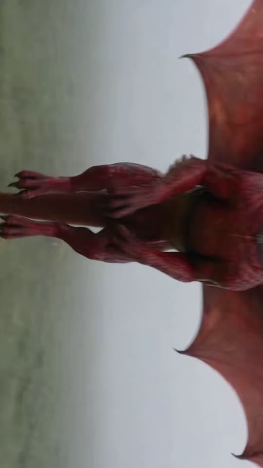
g_22.25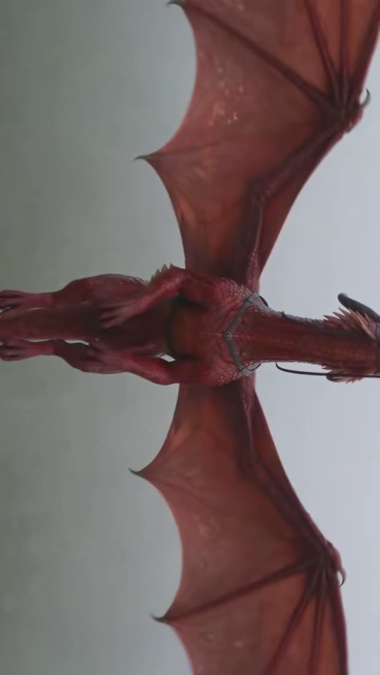
g_23.25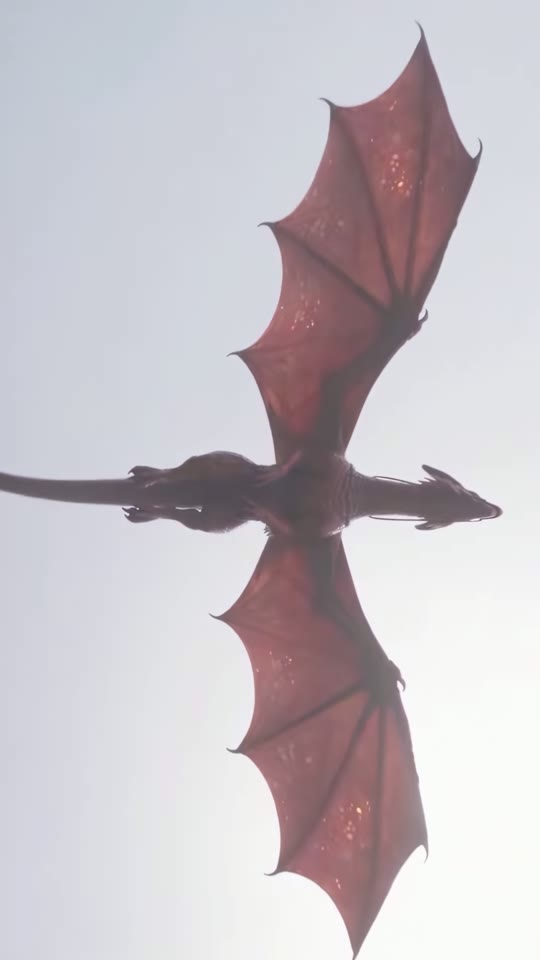
g_24.75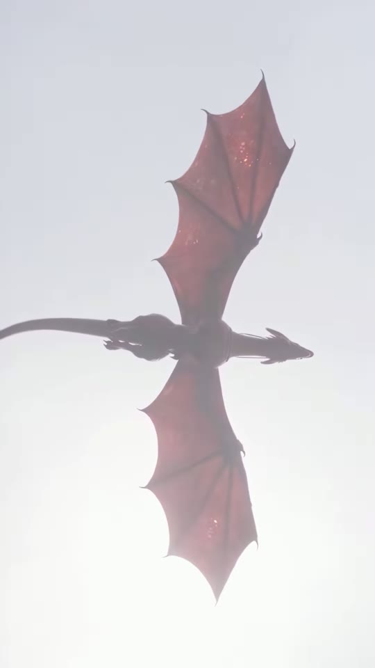
g_25.75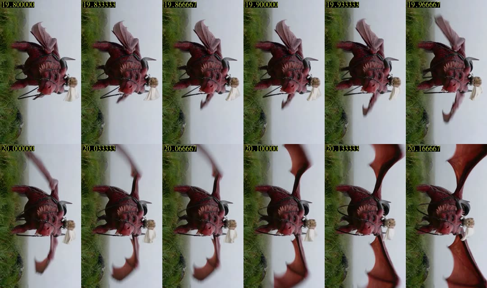
x_19.80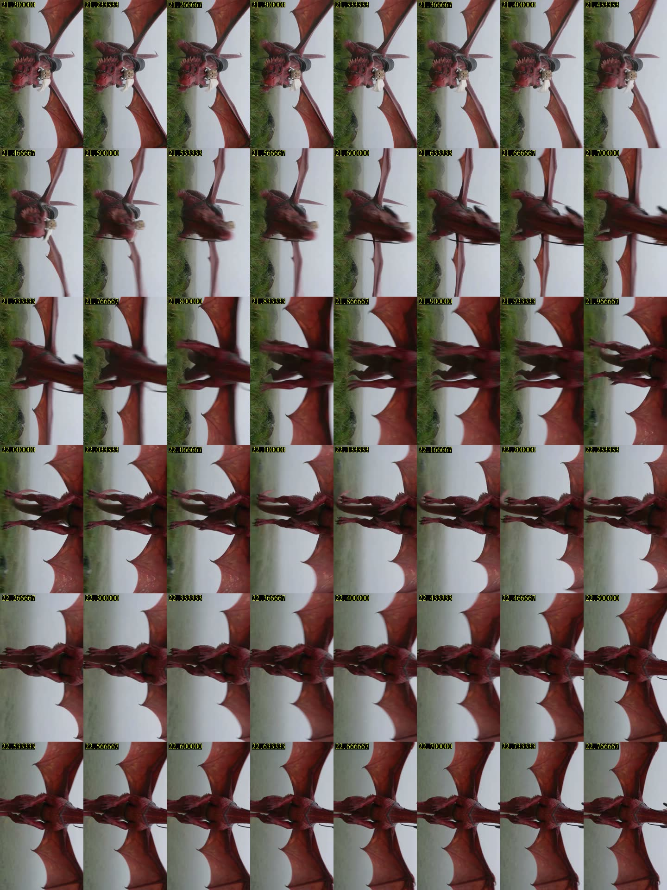
x_21.20| 카메라 움직임 | 착지 충격 셰이크(17.37~18.8) → 느린 풀백(18.8~20.0) → 고정(20.0~21.45) → 도약 따라 빠른 틸트업 90°(21.45~22.6) → 정지 상태로 올려다봄, 용만 멀어짐(22.6~26.0). |
|---|---|
| 화면 구성(구도) | [9:16 회전 후] 착지: 용 x 0~90%로 프레임을 꽉 채움. 날개 펼침(20.75): 풀 x 0~35%, 용 머리 x 12~35% · y 28~62%, 고양이 x 52~62% · y 45~55%, 안장 x 65~75%, 날개 y 0~35% / 55~100%. 엔딩(25.75): 머리 x 83% 방향, 날개 끝 y 10%/90%, 몸 중심 x 55% · y 50%, 꼬리 x 0% 까지. [16:9 원본] 날개 펼침: 지평선 y 65%, 용 얼굴 중앙 하단 x 28~62% · y 65~88%, 고양이 x 50% · y 43%(높이 10%), 양 날개 좌우 끝까지. 엔딩: 하늘을 수직으로 올려다봄, 용 머리가 위(y 17%), 날개 폭 프레임 너비 80%, 꼬리 아래 끝까지. |
| 동물 행동/연기 | 안장 얹은 용에 탄 기사 고양이 → 날개 펼침 → 머리 위로 비상 → 안개 속으로 사라짐. |
| 배경 | 초원+안개 → 하늘로 틸트 후 흰 안개만(밝기 상승, 거의 화이트). |
| 화면 문구/자막 | 없음 |
| 다음 컷 전환 | Hard end (no fade) → natural white-fog out — 페이드 아웃 없이 26.00초 종료. 안개가 밝아져 거의 흰 화면이 되는 인-카메라 '화이트 아웃'. 첫 프레임도 흰 안개라 루프 시 이질감 적음. |
| BGM 상태 | 클라이맥스: 19.68/21.89/24.06 마디 히트. 21.5~21.9 서브 급증(도약 붐). 끝까지 볼륨 유지, 곡 중간에서 뚝 끊김(-16dB에서 종료). |
Horizontal 16:9 photorealistic cinematic still (rotated 90 degrees clockwise in the edit). Low ground-level camera 30 cm high, 24mm, looking slightly up. a colossal crimson-red European dragon with four legs and two huge bat-like wings, deep blood-red pebbled scales, lighter coral-red belly plates, a crown-like frill of long red spines around the head and jaw, two thick curved charcoal-black horns sweeping backward, amber reptile eyes, yellowed fangs, translucent red wing membranes with dark finger bones and a hooked claw at each wing wrist, a long tail with a row of spikes; its head alone is about ten times bigger than the kitten; the dragon now wears riding tack: a dark-brown leather saddle with a high rounded cantle strapped at the base of the neck behind the horns, and a black leather bridle with steel rings around the snout with two long loose reins hanging down to the grass. The dragon crouches close to the camera facing it head-on, head low at bottom-center (x 28-62%, y 65-88%), both wings fully spread to the left and right frame edges. a tiny fluffy long-haired kitten about 10 weeks old (Persian x British longhair look), cream fur with soft pale-apricot tabby markings on the forehead and cheeks, white muzzle and chin, big round glossy dark blue-grey eyes, small pink nose, small rounded ears, a small pale-pink satin bow clipped on top of the head near its LEFT ear, standing upright on its hind legs like a person, wearing a miniature but fully realistic suit of polished silver medieval plate armor (rounded pauldrons etched with fleur-de-lis ornaments, articulated gauntlets, breastplate, chainmail skirt, knee cops, greaves, pointed sabatons), dark-brown leather cross-belts with small brass buckles across chest and hips, a long ivory-cream heavy linen cape tied at the shoulders, holding a steel longsword with a brass crossguard, riding proudly on the dragon's neck just behind the horns at x 50%, y 43% (10% of frame height), looking at the camera, cape fluttering. a misty highland moor of long wet green grass, dense grey-white fog swallowing the horizon, a waist-high (to a human: knee-high) black granite boulder covered in green moss and white lichen dots, overcast diffused daylight, no sun, no people, no buildings, horizon at y 65%. photorealistic live-action fantasy film still, ultra-detailed fur, scale and metal textures, soft flat overcast light, low contrast, muted desaturated greens, cool grey fog, crimson dragon as the only saturated color, subtle film grain, shot on ARRI Alexa 35. IMPORTANT: generate as a normal horizontal 16:9 landscape shot with the ground at the BOTTOM; in the edit it is rotated 90 degrees clockwise (ffmpeg transpose=1) so the ground ends up on the LEFT edge of the 9:16 reel.
Horizontal 16:9 looking straight up into bright white fog: small pale crimson dragon silhouette seen from directly below, head pointing to the top of the frame at y 17%, wings spread horizontally spanning 80% of the frame width, tail trailing to the bottom edge, backlit membranes with faint glowing speckles, low contrast, almost white.
0-1.4 s: the saddled dragon lands hard right in front of the camera with motion blur, shaking its head, wings folding, the kitten riding on its neck. 1.4-2.6 s: it settles into a crouch facing the camera, reins swinging, the kitten looks at the lens; the camera pulls back slightly. 2.6-2.85 s: the dragon snaps both wings fully open. 2.85-4.1 s: heroic hold. 4.1-4.5 s: it crouches and launches straight up over the camera. 4.5-5.2 s: its belly and hind legs pass overhead as the camera tilts up 90 degrees to follow, the ground leaves the frame. 5.2-8.6 s: seen from directly below, the dragon flies away upward into bright white fog with slow wingbeats, shrinking and fading to a pale silhouette, the kitten no longer visible. Heavy realistic mass, wind and fog swirl. Saddle and bridle stay the same. IMPORTANT: generate as a normal horizontal 16:9 landscape shot with the ground at the BOTTOM; in the edit it is rotated 90 degrees clockwise (ffmpeg transpose=1) so the ground ends up on the LEFT edge of the 9:16 reel.
cartoon, 3d render look, plastic fur, anime, text, subtitles, watermark, logo, extra limbs, extra tails, two swords, deformed paws, human hands, missing armor, changing armor color, bow moving to the other ear, dragon with only two legs (wyvern), fire breathing, blue sky, sunshine, harsh shadows, oversaturated, lens flare, black borders, split screen, morphing, flicker, no saddle, kitten falling off, sun disk, blue sky, birds
16:9 1920x1080, 10초, first-last frame(시작=안장 용 정면 착지 프레임, 끝=흰 안개 실루엣). 사용 8.63초(259프레임). 안장/고삐는 flux-kontext-max로 샷3 용 이미지에 추가해 시작 프레임 제작하면 같은 용 유지.
no fade; -t 26.0 (audio 30 ms micro fade only to avoid click)
composition duration 26.0 s; no outro.
Horizontal 16:9 photorealistic still (rotated 90 degrees clockwise in the edit). Low camera 30 cm high, 24mm, slightly up. a colossal crimson-red European dragon with four legs and two huge bat-like wings, deep blood-red pebbled scales, lighter coral-red belly plates, a crown-like frill of long red spines around the head and jaw, two thick curved charcoal-black horns sweeping backward, amber reptile eyes, yellowed fangs, translucent red wing membranes with dark finger bones and a hooked claw at each wing wrist, a long tail with a row of spikes; its head alone is about ten times bigger than the kitten; the dragon now wears riding tack: a dark-brown leather saddle with a high rounded cantle strapped at the base of the neck behind the horns, and a black leather bridle with steel rings around the snout with two long loose reins hanging down to the grass. Crouched close facing the camera, head low at bottom-center, wings fully spread to both frame edges. a tiny baby golden (Syrian) hamster standing upright on its hind legs, plump round body, golden-orange fur on the back and head with a cream-white belly, chin and muzzle, full soft cheeks, big round glossy black eyes, small rounded pink-edged ears, pink nose and whiskers, tiny pink paws, a small pale-pink satin bow clipped on top of the head near its LEFT ear, wearing a miniature but fully realistic suit of polished silver medieval plate armor (rounded pauldrons etched with fleur-de-lis, articulated gauntlets, breastplate, chainmail skirt, greaves, pointed sabatons), dark-brown leather cross-belts with brass buckles, a long ivory-cream linen cape, holding a steel longsword with a brass crossguard, riding on the dragon's neck just behind the horns at x 50%, y 43%, looking at the camera. a misty highland moor of long wet green grass, dense grey-white fog swallowing the horizon, a waist-high (to a human: knee-high) black granite boulder covered in green moss and white lichen dots, overcast diffused daylight, no sun, no people, no buildings, horizon at y 65%. photorealistic live-action fantasy film still, ultra-detailed fur, scale and metal textures, soft flat overcast light, low contrast, muted desaturated greens, cool grey fog, crimson dragon as the only saturated color, subtle film grain, shot on ARRI Alexa 35. IMPORTANT: generate as a normal horizontal 16:9 landscape shot with the ground at the BOTTOM; in the edit it is rotated 90 degrees clockwise (ffmpeg transpose=1) so the ground ends up on the LEFT edge of the 9:16 reel.
Saddled dragon lands in front of the camera (0-1.4 s), settles facing the lens with the hamster knight riding behind its horns, wings snap open at 2.6 s, heroic hold, launches over the camera at 4.1 s, camera tilts up 90 degrees as the belly passes, then from 5.2 s the dragon flies away upward into bright white fog, shrinking to a pale silhouette. IMPORTANT: generate as a normal horizontal 16:9 landscape shot with the ground at the BOTTOM; in the edit it is rotated 90 degrees clockwise (ffmpeg transpose=1) so the ground ends up on the LEFT edge of the 9:16 reel.
고삐를 햄스터가 앞발로 쥐고 있게 하면 '기수' 느낌이 강해짐. 안장이 햄스터보다 훨씬 커도 원본과 동일(원본도 고양이는 안장 앞 목 위에 앉음).
| beats_ko |
|
|---|
에픽 시네마틱 하이브리드 오케스트라(추정). 0~4.6초 저역 앰비언트 인트로(바람+드론+부드러운 서브붐, 2.2~3.5초 가장 조용함), 3.5초부터 라이저, 5.5초 용 포효, 6.5초부터 풀 편성 진입: 약 110BPM 4/4, 매 마디 첫 박(약 2.2초 간격: 6.51, 8.67, 10.88, 13.09, 15.30, 17.50, 19.68, 21.89, 24.06초)에 큰 타악 히트 + 현악 오스티나토, 호른/브라스·허밍 콰이어로 영웅적 상승, 21.9초 도약과 히트 싱크, 페이드 없이 곡 중간에 26.0초 종료.
Epic cinematic fantasy hybrid orchestral score, 110 BPM, 4/4, D minor, no vocals lyrics. Bars 1-2: cold windy ambient intro with low cello drone, soft sub-bass booms and a whisper of wordless choir; near-silence for one bar; then a reverse riser. Bar 3: massive drop into driving staccato low strings ostinato with a huge taiko and orchestral bass drum hit on every bar downbeat, dark brass swells, wordless choir. Bars 5-8: heroic French horn and trumpet theme rising, soaring violins, building to a triumphant climax at bar 8 with cymbal swell, then keeps full energy (do not fade out). Mood: dangerous turning into triumphant, dragon-rider adventure, big-budget fantasy trailer.
| 0.0s | howling moor wind with grass rustle (bed, 4.6 s) · -14 dB 검색어: wind moor grass howling gusty 생성: Cold gusty wind blowing across an open misty highland moor, long grass rustling, no birds |
|---|---|
| 0.25s | soft cinematic sub boom · -10 dB 검색어: cinematic sub boom soft low impact 생성: Soft deep cinematic sub-bass boom with long tail |
| 3.5s | reverse swell riser (1 s) · -9 dB 검색어: reverse swell riser cinematic 생성: Short dark reverse cymbal swell riser rising for one second |
| 4.05s | rotational whoosh · -6 dB 검색어: whoosh spin rotate camera 생성: Fast swirling rotational whoosh, air spin, 0.6 seconds |
| 4.6s | deep dragon growl in fog · -10 dB 검색어: dragon growl low distant creature 생성: Huge dragon low rumbling growl, distant through fog, menacing |
| 5.55s | massive dragon roar · -3 dB 검색어: dragon roar huge monster 생성: Gigantic dragon roar, close, powerful, with throaty rasp and reverb tail, 1 second |
| 6.25s | camera knock thud + grass whoosh · -4 dB 검색어: body fall grass thud impact 생성: Heavy thud of a camera knocked into wet grass with a quick whoosh |
| 6.51s | giant footstep x3 (6.51, 6.78, 7.06) · -5 dB 검색어: giant footstep monster stomp ground 생성: Giant creature footstep stomping on soft wet earth, deep ground shake |
| 7.4s | small armor tumble clatter · -8 dB 검색어: armor clatter small metal tumble 생성: Tiny suit of metal armor tumbling and sliding on grass, light clinks |
| 8.15s | dirt clods debris patter · -12 dB 검색어: dirt debris falling clods 생성: Clods of dirt and grass raining down after a heavy stomp |
| 9.2s | heavy tail swish · -12 dB 검색어: large tail swish whoosh creature 생성: Heavy reptile tail swishing through the air and grass |
| 9.65s | jaw snap + wet growl · -8 dB 검색어: monster jaw snap teeth 생성: Huge jaws snapping shut with teeth clack and a wet growl, close |
| 11.15s | giant nostril sniff and snort · -6 dB 검색어: creature sniff snort breath large 생성: Enormous dragon sniffing twice then a heavy snort exhale, very close |
| 13.05s | head swing whoosh + armor clink · -8 dB 검색어: whoosh swing metal clink small 생성: Fast heavy whoosh followed by a tiny metal armor clink landing |
| 15.55s | huge leathery wing flap takeoff · -5 dB 검색어: dragon wing flap takeoff leathery 생성: Massive leathery dragon wings flapping down hard for takeoff, air blast |
| 16.35s | wingbeats (16.35, 16.85) · -9 dB 검색어: wing flap large creature 생성: Two slow powerful leathery wingbeats |
| 17.37s | heavy landing thud + flap · -5 dB 검색어: dragon landing impact heavy 생성: Heavy dragon landing on grass, deep thud and wing flap |
| 18.9s | saddle leather creak + ring jingle (inferred) · -12 dB 검색어: leather saddle creak bridle jingle 생성: Leather saddle creaking and small steel bridle rings jingling |
| 19.95s | wing unfurl snap · -4 dB 검색어: wing unfold snap whoosh 생성: Giant leathery wings snapping fully open with a sharp whoosh |
| 21.45s | takeoff sub boom + whoosh · -3 dB 검색어: takeoff boom whoosh cinematic 생성: Powerful takeoff: deep sub boom and huge whoosh as a dragon launches overhead |
| 22.0s | flyover wind gust · -6 dB 검색어: flyby wind gust large 생성: Wind gust of a huge creature flying low overhead and away |
| 23.0s | distant wingbeats fading · -14 dB 검색어: distant wing flaps fading 생성: Slow wingbeats fading away into the distance in fog |
BGM 기준 -16~-18 LUFS 느낌(원본 평균 -18.5dB RMS, 피크 -13dB). 인트로 4.6초는 음악 -10dB 이하로 바람 위주. 포효(5.55~6.40)와 도약(21.45~22.30) 구간 BGM -3dB 덕킹. 발소리·충돌은 서브 강조(원본 7.0초 서브 에너지 최대). 끝은 페이드 없이 26.00초 하드 컷(클릭 방지 30ms만). ※ 음성·효과음 정체는 들을 수 없어 라우드니스/온셋/대역에너지로 추정.
기본 교체 동물: baby golden (Syrian) hamster · 대안: Holland Lop baby bunny (cream-white fur, floppy ears), baby red panda cub (rust-red fur, white face mask, striped tail)
Character reference turnaround sheet on a plain light-grey background, photorealistic: a tiny baby golden (Syrian) hamster standing upright on its hind legs, plump round body, golden-orange fur on the back and head with a cream-white belly, chin and muzzle, full soft cheeks, big round glossy black eyes, small rounded pink-edged ears, pink nose and whiskers, tiny pink paws, a small pale-pink satin bow clipped on top of the head near its LEFT ear, wearing a miniature but fully realistic suit of polished silver medieval plate armor (rounded pauldrons etched with fleur-de-lis, articulated gauntlets, breastplate, chainmail skirt, greaves, pointed sabatons), dark-brown leather cross-belts with brass buckles, a long ivory-cream linen cape, holding a steel longsword with a brass crossguard. Five views in one row: front, 3/4 front, side profile, back (showing the ivory cape), 3/4 back; plus a close-up of the face with the pink bow near the LEFT ear and a close-up of the sword crossguard. Same lighting (soft overcast), same scale in every view, 16:9. Second sheet: a colossal crimson-red European dragon with four legs and two huge bat-like wings, deep blood-red pebbled scales, lighter coral-red belly plates, a crown-like frill of long red spines around the head and jaw, two thick curved charcoal-black horns sweeping backward, amber reptile eyes, yellowed fangs, translucent red wing membranes with dark finger bones and a hooked claw at each wing wrist, a long tail with a row of spikes; its head alone is about ten times bigger than the kitten — front, side, top-down with wings spread, underside flying silhouette, head close-up; plus a variant wearing the dragon now wears riding tack: a dark-brown leather saddle with a high rounded cantle strapped at the base of the neck behind the horns, and a black leather bridle with steel rings around the snout with two long loose reins hanging down to the grass.
#!/usr/bin/env bash
# v04 "kitten knight x red dragon pt.2" re-assembly (26.00 s, 1080x1920, 30 fps, 780 frames)
# Inputs in the current folder:
# s01.mp4 9:16 vertical gen (1080x1920 or 720x1280), >= 4.60 s (kitten in fog + 90deg camera roll)
# s02.mp4 16:9 LANDSCAPE gen (1920x1080 or 1280x720), >= 7.67 s (dragon attack + hide behind rock)
# s03.mp4 16:9 LANDSCAPE gen, >= 5.00 s (dragon scoops kitten, takes off)
# s04.mp4 16:9 LANDSCAPE gen, >= 8.40 s (saddled dragon, wing unfurl, flyover, flies into fog)
# bgm.mp3 epic cinematic track, bar downbeat hits every ~2.2 s (110 BPM), first big hit at 6.51 s
# sfx/*.wav (optional, see SFX list; missing files are skipped)
# ROLL_IN_EDIT=1 -> s01 was generated WITHOUT the roll: the edit adds the 0->85deg clockwise roll 3.93-4.60 s.
# ROLL_IN_EDIT=0 -> s01 already contains the roll (preferred, like the original).
# S2_IN / S3_IN / S4_IN = seconds to skip at the head of each gen (pick the best 7.67 / 5.10 / 8.63 s window).
set -euo pipefail
ROLL_IN_EDIT=${ROLL_IN_EDIT:-0}
S1_IN=${S1_IN:-0}; S2_IN=${S2_IN:-0}; S3_IN=${S3_IN:-0}; S4_IN=${S4_IN:-0}
OUT=${OUT:-v04_remake.mp4}
# ---------- video ----------
PREP_V='fps=30,scale=1080:1920:force_original_aspect_ratio=increase:flags=lanczos,crop=1080:1920,setsar=1'
PREP_L='fps=30,scale=1920:1080:force_original_aspect_ratio=increase:flags=lanczos,crop=1920:1080,transpose=1,setsar=1'
# transpose=1 = rotate 90deg CLOCKWISE -> ground ends up on the LEFT edge, sky on the right (exactly like the original)
if [ "$ROLL_IN_EDIT" = "1" ]; then
# roll: theta(n)=1.48*(n/20)^2 rad (ease-in, 0 -> 85deg in 20 frames = 3.93-4.60 s). Frame is upscaled 2x, rotated, then zoompan crops
# with zoom = cos(theta)+1.778*sin(theta) (the minimum that hides the black corners),
# tmix=3 fakes rotational motion blur. Hard cut to the rotated s02 at 4.60 s completes the "world turned sideways" gag.
V1="[0:v]trim=start=${S1_IN}:duration=4.6,setpts=PTS-STARTPTS,${PREP_V},trim=end_frame=138,split=2[a0][b0];
[a0]trim=end_frame=118,setpts=PTS-STARTPTS[a1];
[b0]trim=start_frame=118,setpts=PTS-STARTPTS,scale=2160:3840:flags=bicubic,rotate=a='1.48*pow(min((n+1)/20,1),2)':ow=2160:oh=3840:c=black,zoompan=z='1.02*(cos(1.48*pow(min((on+1)/20,1),2))+1.778*sin(1.48*pow(min((on+1)/20,1),2)))':x='iw/2-(iw/zoom/2)':y='ih/2-(ih/zoom/2)':d=1:s=1080x1920:fps=30,tmix=frames=3[b1];
[a1][b1]concat=n=2:v=1:a=0[v1];"
else
V1="[0:v]trim=start=${S1_IN}:duration=4.8,setpts=PTS-STARTPTS,${PREP_V},trim=end_frame=138,setpts=PTS-STARTPTS[v1];"
fi
VF="${V1}
[1:v]trim=start=${S2_IN},setpts=PTS-STARTPTS,${PREP_L},tpad=stop_mode=clone:stop_duration=0.5,trim=end_frame=230,setpts=PTS-STARTPTS[v2];
[2:v]trim=start=${S3_IN},setpts=PTS-STARTPTS,${PREP_L},tpad=stop_mode=clone:stop_duration=0.5,trim=end_frame=153,setpts=PTS-STARTPTS[v3];
[3:v]trim=start=${S4_IN},setpts=PTS-STARTPTS,${PREP_L},tpad=stop_mode=clone:stop_duration=0.5,trim=end_frame=259,setpts=PTS-STARTPTS[v4];
[v1][v2][v3][v4]concat=n=4:v=1:a=0,eq=saturation=0.94:contrast=0.97:gamma=1.02,format=yuv420p[vout]"
# cut points: 4.600 (f138) | 12.267 (f368) | 17.367 (f521) | 26.000 (f780) -- all HARD cuts, no xfade.
# ---------- audio ----------
# file | start seconds | gain dB (times measured from the original's onsets / loudness envelope; SFX identities are inferred)
SFX=(
"sfx/01_moor_wind_bed.wav|0.00|-14"
"sfx/02_soft_sub_boom.wav|0.25|-10"
"sfx/03_reverse_riser.wav|3.50|-9"
"sfx/04_roll_whoosh.wav|4.05|-6"
"sfx/05_dragon_low_growl.wav|4.60|-10"
"sfx/06_dragon_roar.wav|5.55|-3"
"sfx/07_camera_knock_thud.wav|6.25|-4"
"sfx/08_giant_footstep_1.wav|6.51|-5"
"sfx/08_giant_footstep_2.wav|6.78|-6"
"sfx/08_giant_footstep_3.wav|7.06|-6"
"sfx/09_armor_tumble_clatter.wav|7.40|-8"
"sfx/10_dirt_debris_patter.wav|8.15|-12"
"sfx/11_tail_swish.wav|9.20|-12"
"sfx/12_jaw_snap_growl.wav|9.65|-8"
"sfx/13_dragon_sniff_snort.wav|11.15|-6"
"sfx/14_head_swing_whoosh_clink.wav|13.05|-8"
"sfx/15_wing_flap_takeoff.wav|15.55|-5"
"sfx/16_wingbeat.wav|16.35|-9"
"sfx/17_landing_thud_flap.wav|17.37|-5"
"sfx/18_wing_unfurl_snap.wav|19.95|-4"
"sfx/19_takeoff_boom_whoosh.wav|21.45|-3"
"sfx/20_flyover_wind_gust.wav|22.00|-6"
"sfx/21_distant_wingbeats.wav|23.00|-14"
)
INPUTS=(-i s01.mp4 -i s02.mp4 -i s03.mp4 -i s04.mp4 -i bgm.mp3)
AF="[4:a]atrim=0:26,asetpts=PTS-STARTPTS,afade=t=in:d=0.05,aformat=sample_rates=48000:channel_layouts=stereo,volume='if(between(t,5.55,6.40)+between(t,21.45,22.30),0.71,1)':eval=frame[bgm];"
MIX="[bgm]"; N=1; IDX=5
for row in "${SFX[@]}"; do
IFS='|' read -r f t g <<< "$row"
[ -f "$f" ] || continue
ms=$(python -c "print(int(round(float('$t')*1000)))")
INPUTS+=(-i "$f")
AF+="[${IDX}:a]aformat=sample_rates=48000:channel_layouts=stereo,adelay=${ms}|${ms},volume=${g}dB[s${IDX}];"
MIX+="[s${IDX}]"; N=$((N+1)); IDX=$((IDX+1))
done
# bgm is ducked -3 dB under the roar (5.55-6.40 s) and the takeoff (21.45-22.30 s) by the volume expression above
AF+="${MIX}amix=inputs=${N}:normalize=0:duration=first,atrim=0:26,afade=t=out:st=25.97:d=0.03,alimiter=limit=0.89[aout]"
ffmpeg -y -hide_banner -v error "${INPUTS[@]}" \
-filter_complex "${VF};${AF}" \
-map "[vout]" -map "[aout]" -r 30 -frames:v 780 \
-c:v libx264 -preset slow -crf 16 -profile:v high -pix_fmt yuv420p -movflags +faststart \
-c:a aac -b:a 192k -ar 48000 -t 26.0 "$OUT" < /dev/null
echo "wrote $OUT"
# NOTE: the original shows ~6 extra duplicated frames at 21.87-22.57 s (micro-stutter during the flyover, most likely baked into the source gen).
# It is NOT reproduced here on purpose; if you want it, cut [v4] at frame 135 and 156 and slow that 0.70 s piece with setpts=1.3*PTS.
Use the HyperFrames skill (read hyperframes, then hyperframes-core) to build a 1080x1920, 30 fps, exactly 26.00 s vertical composition named 'kitten-dragon-pt2' that re-creates this edit. Assets in ./assets: s01.mp4 (9:16 vertical, kitten knight intro), s02.mp4, s03.mp4, s04.mp4 (16:9 LANDSCAPE 1920x1080 generations), bgm.mp3, sfx/*.wav. VIDEO TRACK (track 0, all HARD cuts, no transitions): 1) s01.mp4 data-start=0 data-duration=4.6, object-fit: cover 1080x1920. If the clip has no built-in roll, wrap it in a div and add a GSAP tween at 3.933 s: rotation 0 -> 85 deg (clockwise), scale 1 -> 1.86, duration 0.667 s, ease 'power2.in', plus filter blur 0 -> 2px as motion-blur proxy; transform-origin center. 2) s02.mp4 data-start=4.6 data-duration=7.667 (media offset chosen by me, default 0). 3) s03.mp4 data-start=12.267 data-duration=5.1. 4) s04.mp4 data-start=17.367 data-duration=8.633. Clips 2-4 are landscape: render each <video> at width 1920px height 1080px, absolutely centered in the 1080x1920 frame (left:-420px; top:420px) with transform: rotate(90deg) (CLOCKWISE) so the ground is on the LEFT edge and the sky on the right; no letterbox. GRADE: a full-frame overlay-free CSS filter on the video layer: saturate(0.94) contrast(0.97) brightness(1.01). NO captions, NO text, NO logo, NO outro card. AUDIO: bgm.mp3 from 0 to 26.0 s at 0 dB, ducked to -3 dB during 5.55-6.40 s and 21.45-22.30 s, no fade-out (30 ms micro fade only). SFX clips at: 0.00 wind bed -14 dB; 0.25 sub boom -10; 3.50 reverse riser -9; 4.05 roll whoosh -6; 4.60 dragon growl -10; 5.55 dragon roar -3; 6.25 camera knock thud -4; 6.51 / 6.78 / 7.06 giant footsteps -5/-6/-6; 7.40 armor clatter -8; 8.15 dirt debris -12; 9.20 tail swish -12; 9.65 jaw snap -8; 11.15 sniff snort -6; 13.05 head-swing whoosh + clink -8; 15.55 wing flap takeoff -5; 16.35 wingbeat -9; 17.37 landing thud -5; 18.90 saddle creak -12; 19.95 wing unfurl snap -4; 21.45 takeoff boom -3; 22.00 flyover gust -6; 23.00 distant wingbeats -14. Music reference: 110 BPM, big hits on bar downbeats at 6.51, 8.67, 10.88, 13.09, 15.30, 17.50, 19.68, 21.89, 24.06 s — if the bgm is different, shift its start so a downbeat lands on 21.89 s (the dragon launch). Then lint/check the project, render to renders/kitten-dragon-pt2.mp4, and verify with ffprobe that it is 1080x1920, 30 fps, 780 frames, 26.00 s. Do not upload or publish anything.
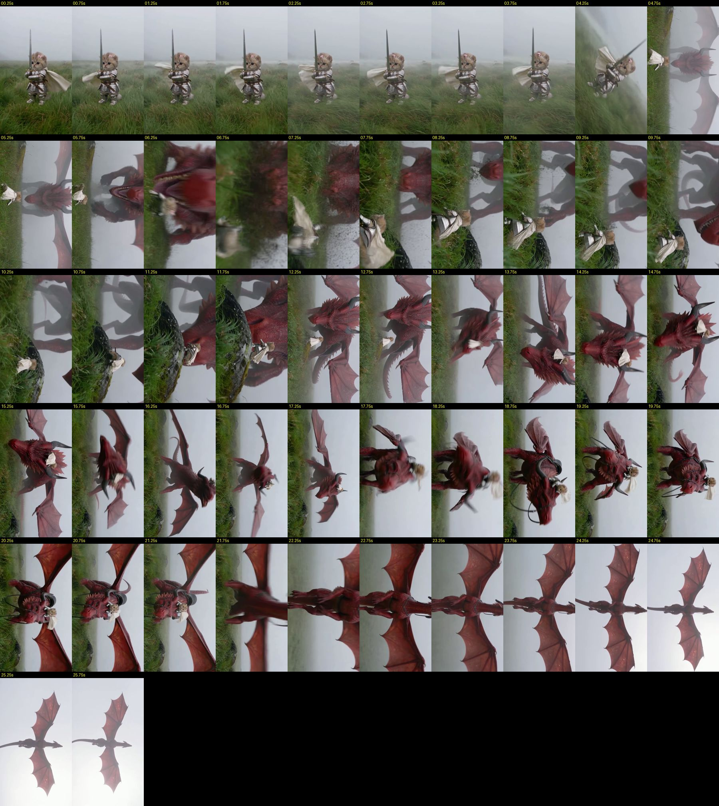